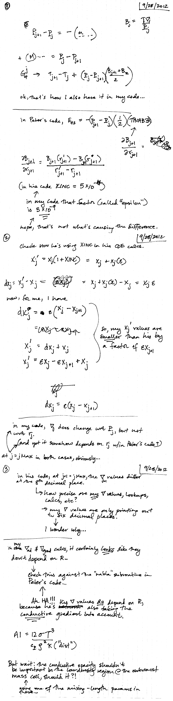

Date & Time: Oct. 1, 2012
Location: campus
Computing context: MachoMac
(/Desktop/Research/CppHenyeyCode/src, /Desktop/Research/BodenheimerCode/UnalteredCode)
From last time:
Need to scan in
my handwritten notes-- I've figured out that the E differences are
because Peter's code includes a calculation of the conductive
opacities, and mine doesn't. Apparently that 1 part in 10^8
difference is actually important when you reach the outer boundary
of your ball of gas.
Done. See the scan below.

Handwritten
notes from 9/28/2012
Resume here tomorrow, trying to back-out/triangulate what equations he's using to get Kcond in his code.
Also, check (via python scripts and judicious substitutions), that the E42 thing is really what's responsible for driving the difference b/w the codes' results, and that it doesn't turn out to just be totally inconsequential.
To do Today:
Try to back-out/triangulate what equations Peter uses to get Kcond in his code.
Also, check (via python scripts and judicious substitutions), that the E42 thing is really what's responsible for driving the difference b/w the codes' results, and that it doesn't turn out to just be totally inconsequential.
Done. It looks like that E42 difference actually isn't what's driving the dL profile differences between the codes. It's mostly caused by something in the outermost D matrix, and the final bit of agreement is driven by something in the outermost G matrix.
Note: setting the outermost Helena D and G matrix values to their Peter counterparts does NOT cause any of the other dX profiles to start to disagree.
Go through and figure out which element(s) of the outermost G and D matrices are responsible for getting the dL profiles to match up.
To keep in mind for later:
For the 1 Mjup model: do the Peter and Helena models' dX values (raw) now agree, too?